City of the Ascending Dragon
Hanoi architecture
Coming in the next update Hanoi isn't in the App Store version yet. Get the app now and it arrives with the update.
In 1010 Emperor Lý Thái Tổ moved his capital here and named it Thăng Long, 'ascending dragon', after claiming to have seen a dragon rise above the Red River. Hanoi is also home to the Temple of Literature, which hosted Vietnam's first national university from 1076.
- 15Landmarks
- 1049Oldest · One Pillar Pagoda
- 345 mTallest · Keangnam Hanoi Landmark Tower
- 9Architects
Map and Look Around
Tap a numbered pin to see that landmark from the street with Apple Look Around.
Eat and stay near
Restaurants
Hotels
From Apple Maps. Walking times are estimates from straight-line distance.
Before you go
- Fly intoNoi Bai International Airport (HAN)
Nội Bài International Airport lies about 35 km north-east of downtown Hanoi and is the second-busiest airport in Vietnam after Tan Son Nhat in Ho Chi Minh City. Its Terminal 2, opened on 4 January 2015 together with the new Nhật Tân Bridge into the city, handles all international flights, and it is the main hub of Vietnam Airlines.
- CurrencyVietnamese Dong (₫)
- LanguageVietnamese
Vietnamese is written in a Latin-based alphabet that grew out of Alexandre de Rhodes's 1651 dictionary, which recorded the pronunciation of Hanoi at the time. Since 1975 the language across the country has gradually shifted towards the Northern dialect spoken in the capital.
- Getting aroundHanoi Metro & Motorbikes
The Hanoi Metro became Vietnam's first working rapid transit system when Line 2A opened on 6 November 2021, followed by the first section of Line 3 in August 2024. Motorbikes still rule the streets, and many visitors hop on a 'xe ôm' ('hug bike') motorbike taxi for quick trips around the city.
- Where to stayFind hotels in Hanoi on Expedia Compare on Booking.com Vacation rentals on Vrbo
Stamped! may earn a commission when you book through these links.
- Tours and ticketsFind tours in Hanoi on GetYourGuide More tours on Viator
Skip-the-line tickets and guided tours of the landmarks. Stamped! may earn a commission.
15 landmarks in Hanoi
-

Photo: xiquinhosilva, CC BY 2.0, via Wikimedia Commons Hanoi Opera House
1 Tràng Tiền Street, Hoàn Kiếm, Hanoi, Vietnam
Modelled on the Palais Garnier in Paris but scaled down and built with materials better suited to the tropics, the Hanoi Opera House anchors the head of Tràng Tiền Street. Broyer and Victorin Harlay drew the first design, and François Lagisquet finished it with Harlay; construction ran from June 1901 to December 1911. The 870-seat theatre was the heart of French colonial cultural life, and on 19 August 1945 a huge rally in the square outside sparked the August Revolution.
- Built
- 1911
- Architect
- François Lagisquet, Broyer & Victorin Harlay
- Style
- Neoclassical
- Height
- 34 m (112 ft)
- Today
- Opera house
-
Photo: The original uploader was Chuoibk at English Wikipedia., CC BY-SA 3.0, via Wikimedia Commons Temple of Literature
58 Quốc Tử Giám Street, Hanoi, Vietnam
Emperor Lý Thánh Tông founded this temple to Confucius in 1070, and from 1076 it housed the Imperial Academy, Vietnam's first national university, until 1779. Its courtyards, pavilions and stone stelae honouring successful doctoral candidates preserve building styles from many dynasties, and the Khuê Văn Các pavilion of 1805 has become a symbol of Hanoi. The temple appears on the back of the 100,000 đồng banknote, and before Tết calligraphers gather outside to write New Year wishes.
- Built
- 1070
- Style
- Traditional Vietnamese
- Today
- Temple
-
Photo: NKSTTSSHNVN, CC BY-SA 4.0, via Wikimedia Commons Ho Chi Minh Mausoleum
1 Hùng Vương Road, Ba Đình, Hanoi, Vietnam
This grey granite mausoleum stands in Ba Đình Square, where Ho Chi Minh read Vietnam's Declaration of Independence on 2 September 1945. Work began on 2 September 1973 and it was inaugurated on 29 August 1975. Inspired by Lenin's Mausoleum in Moscow, it adds Vietnamese touches such as its sloping roof and rises 21.6 metres. Ho Chi Minh's embalmed body lies in the cool central hall under a military honour guard, and the gardens around it hold almost 250 plant species from across the country.
- Built
- 1975
- Architect
- Garol Isakovich
- Style
- Stripped Classicism
- Height
- 22 m (71 ft)
- Today
- Mausoleum
-
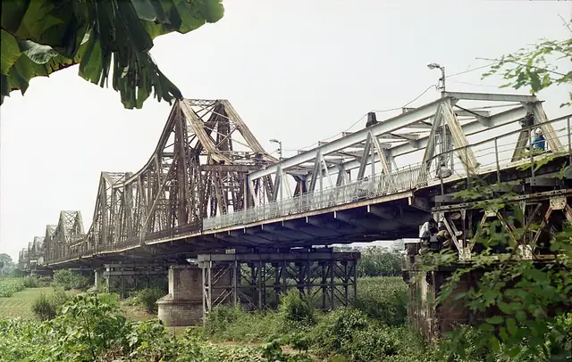
Photo: Phunghung, CC BY 3.0, via Wikimedia Commons Long Biên Bridge
Red River crossing, Hoàn Kiếm to Long Biên, Hanoi, Vietnam
Built between 1899 and 1902 by the Paris firm Daydé & Pillé, with more than 3,000 Vietnamese workers, this cantilever bridge over the Red River was first named after governor-general Paul Doumer. About 2.4 kilometres long, it was one of the longest bridges in Asia when it opened in 1903. As the only crossing linking Hanoi to the port of Haiphong, it was bombed repeatedly during the Vietnam War, starting in 1967, and was repaired again and again. Its long spans still cross the river today.
- Built
- 1902
- Architect
- Daydé & Pillé
- Style
- Cantilever bridge
- Height
- 44 m (143 ft)
- Today
- Bridge
-
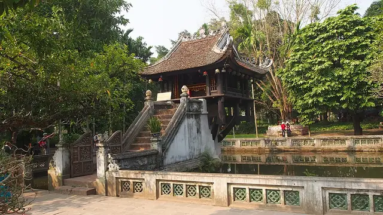
Photo: Clay Gilliland, CC BY-SA 2.0, via Wikimedia Commons One Pillar Pagoda
Ông Ích Khiêm Street, Ba Đình, Hanoi, Vietnam
Emperor Lý Thái Tông built this tiny Buddhist shrine in 1049 after dreaming that the bodhisattva Avalokiteśvara, seated on a lotus, handed him a baby son. The wooden temple sits on a single stone pillar 1.25 metres across, rising from a pond so that it resembles a lotus blossom, the Buddhist symbol of purity. It was blown up in 1954 at the end of the First Indochina War and rebuilt in 1955 in the style left by the Nguyễn dynasty. It is one of Vietnam's two most iconic temples.
- Built
- 1049
- Architect
- Lý Thái Tông (commissioner)
- Style
- Traditional Vietnamese
- Today
- Buddhist temple
-
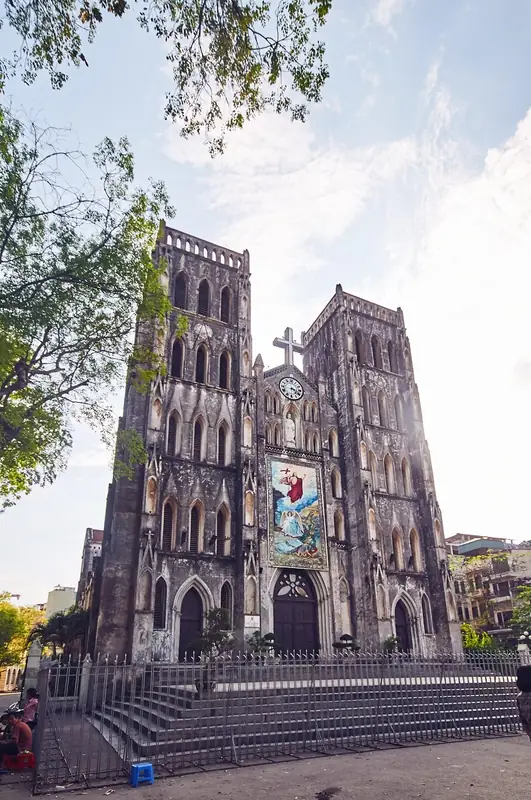
Photo: Arno Kohlem, CC BY-SA 4.0, via Wikimedia Commons St. Joseph's Cathedral
Nhà Chung Street, Hoàn Kiếm, Hanoi, Vietnam
Hanoi's oldest church, this Gothic Revival cathedral was begun in 1884 and opened in December 1886, one of the first buildings put up by the colonial government of French Indochina. Its architecture was designed to resemble Notre-Dame de Paris. Named after Saint Joseph, patron saint of Vietnam, it is the seat of the Archdiocese of Hanoi. At the Sunday evening Mass the crowds spill out into the little square, where hymns are broadcast to those listening outside.
- Built
- 1886
- Style
- Gothic Revival
- Today
- Cathedral
-
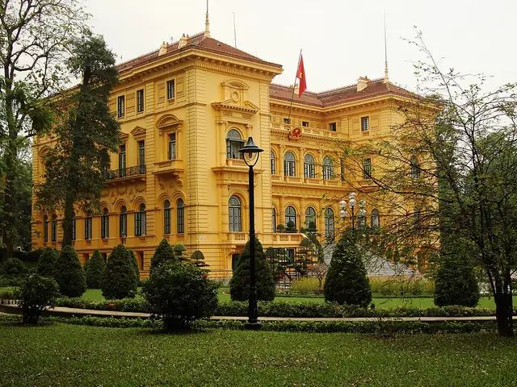
Photo: Jorge Láscar, Public domain, via Wikimedia Commons Presidential Palace
Ba Đình, Hanoi, Vietnam
Built between 1900 and 1906 for the French governor-general of Indochina, this bright yellow palace was the work of Charles Lichtenfelder, though it is often credited to Auguste Henri Vildieu. It borrows freely from the Italian Renaissance, with a grand staircase up to the piano nobile, broken pediments, classical columns and quoins; the mango trees in its grounds are almost the only hint of Vietnam. After independence Ho Chi Minh chose to live in a simple stilt house nearby, and today the palace hosts state ceremonies.
- Built
- 1906
- Architect
- Charles Lichtenfelder
- Style
- French Colonial / Italian Renaissance
- Today
- Presidential palace
-
Flag Tower of Hanoi
Điện Biên Phủ Street, Ba Đình, Hanoi, Vietnam
Built in the early 19th century under the Nguyễn dynasty as an observation post for the Hanoi Citadel, this tower rises 33.4 metres, or 41 metres including its flag. Three stepped square tiers support a tapering tower with a spiral staircase inside, lit by 36 flower-shaped and 6 fan-shaped windows. Unlike much of the citadel, it survived the French conquest and stayed in military use. From 1956 to 2024 it stood within the military history museum, and it now belongs to the Imperial Citadel of Thăng Long.
- Built
- 1812
- Style
- Nguyễn dynasty
- Height
- 33 m (110 ft)
- Today
- Monument
-
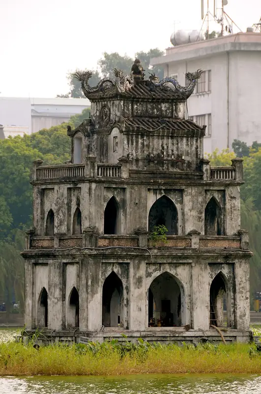
Photo: Jon Rawlinson, CC BY 2.0, via Wikimedia Commons Turtle Tower
Hoàn Kiếm Lake, Hoàn Kiếm, Hanoi, Vietnam
Standing on a tiny island in the middle of Hoàn Kiếm Lake, this small three-storey tower is one of the most recognisable images of Hanoi. Nguyễn Hữu Kim received permission to build it in 1886, during French rule, in honour of Lê Lợi, the national hero whose legend of a returned sword and a golden turtle gives the lake its name. In 1890 the French placed a miniature Statue of Liberty on top, which was removed in 1945. Earlier towers and temples stood on the islet as far back as the 1400s.
- Built
- 1886
- Architect
- Nguyễn Hữu Kim
- Stories
- 3
- Today
- Monument
-
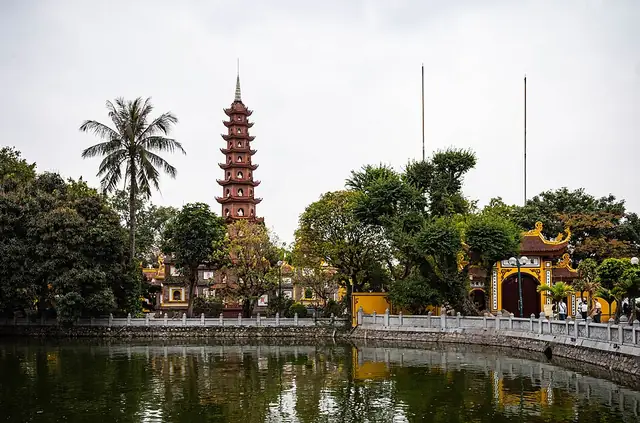
Photo: RB Photo, CC BY 4.0, via Wikimedia Commons Trấn Quốc Pagoda
Thanh Niên Road, Tây Hồ, Hanoi, Vietnam
Hanoi's oldest Buddhist temple was founded in the sixth century under Emperor Lý Nam Đế, making it more than 1,500 years old. It first stood on the banks of the Red River, but in 1615 rising waters forced a move to the little Golden Fish islet in West Lake, joined to the shore by a short causeway. The main sanctuary and halls were last renovated in 1815. Monks have lived here for centuries, praying at its many shrines and teaching Buddhism to visitors.
- Built
- 1615
- Style
- Traditional Vietnamese
- Today
- Buddhist temple
-
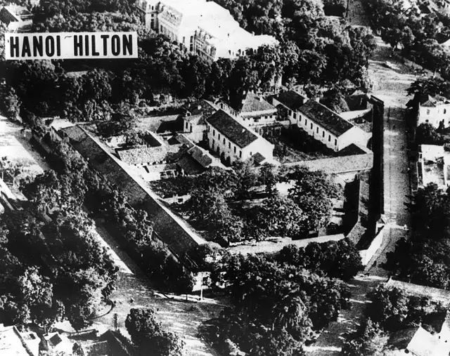
Photo: Unknown author, Public domain, via Wikimedia Commons Hỏa Lò Prison
Hỏa Lò Street, Hoàn Kiếm, Hanoi, Vietnam
The French built this prison between 1896 and 1901 as the Maison Centrale, mainly to hold Vietnamese political prisoners fighting for independence. During the Vietnam War, captured American pilots ironically nicknamed it the 'Hanoi Hilton'. Most of the complex was demolished in 1993 and 1994 to make way for high-rise towers, but the gatehouse and part of the prison survive as a museum. Its displays focus on the colonial era, including a guillotine and the cells of male and female political prisoners.
- Built
- 1901
- Today
- Museum
-
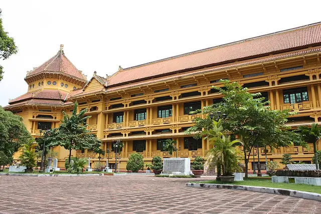
Photo: Alistair Morrenger, Public domain, via Wikimedia Commons Vietnam National Museum of History
216 Trần Quang Khải Street, Hoàn Kiếm, Hanoi, Vietnam
Opened in 1910 as the Musée Louis-Finot of the French School of the Far East, this building was redesigned between 1925 and 1932 by Ernest Hébrard and Charles Batteur. Their blend of French colonial and traditional Vietnamese forms became known as the 'style Indochinois'. North Vietnam took it over in 1958 and widened its scope to national history. Today more than 200,000 objects tell Vietnam's story from prehistory to the 1945 August Revolution, just behind the Opera House.
- Built
- 1932
- Architect
- Ernest Hébrard & Charles Batteur
- Style
- Indochinese style
- Today
- Museum
-
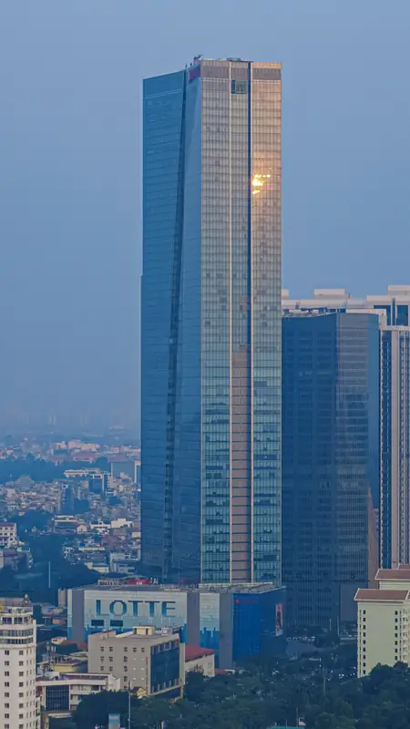
Photo: NKSTTSSHNVN, CC BY 4.0, via Wikimedia Commons Lotte Center Hanoi
54 Liễu Giai Street, Ba Đình, Hanoi, Vietnam
Completed on 2 September 2014, this 65-storey tower rises 272 metres in Ba Đình and is the third tallest building in Vietnam. The American firm Callison created the design, with Junglim Architecture handling detailed design. It stacks a department store, offices, serviced residences and a five-star hotel spanning floors 33 to 64, served by 30 elevators moving at six metres per second. It also has an observation deck for views over the city.
- Built
- 2014
- Architect
- Callison & Junglim Architecture
- Style
- Modernism
- Height
- 272 m (892 ft)
- Stories
- 65
- Today
- Mixed-use skyscraper
-
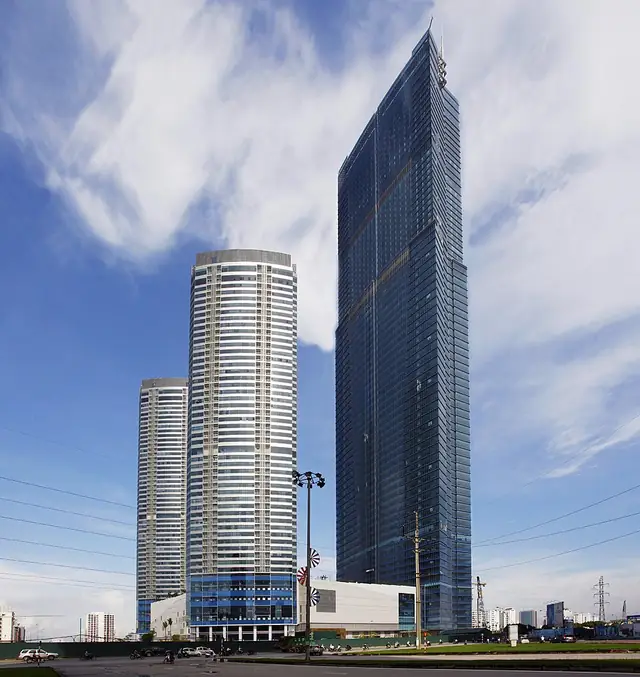
Photo: Soyoungah, CC BY-SA 3.0, via Wikimedia Commons Keangnam Hanoi Landmark Tower
Plot E6 Phạm Hùng Road, Nam Từ Liêm, Hanoi, Vietnam
Better known as Landmark 72, this supertall tower rises 72 storeys to about 350 metres at its tip and is flanked by two 48-storey apartment towers. South Korea's Keangnam Enterprises invested more than a billion US dollars in the complex, designed by Heerim, Samoo, Aum & Lee and HOK. With about 609,673 square metres of floor space, it ranks among the world's largest single buildings. It holds an InterContinental hotel, offices and shops, and hosts Vietnam's tallest stair-climbing race up 1,914 steps.
- Built
- 2011
- Architect
- Heerim, Samoo, Aum & Lee and HOK
- Style
- Modernism
- Height
- 345 m (1,132 ft)
- Stories
- 72
- Today
- Mixed-use skyscraper
-
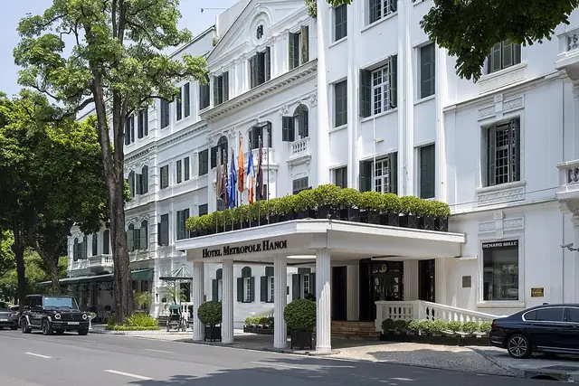
Photo: The Hanoian, CC BY-SA 4.0, via Wikimedia Commons Sofitel Legend Metropole Hanoi
15 Ngô Quyền Street, Hoàn Kiếm, Hanoi, Vietnam
The Grand Métropole Hôtel opened in August 1901 as the largest and most modern hotel in French Indochina, and it remains one of the finest surviving examples of French colonial architecture in the region. Its historic three-storey Heritage Wing holds 106 rooms in classic French style with Vietnamese touches. In 1902 arc lamps were set up outside to light the street at night. A contemporary Opera Wing added between 1994 and 1996 brought the hotel to 358 rooms.
- Built
- 1901
- Style
- French Colonial
- Stories
- 3
- Today
- Hotel

.jpg){kind=link}


.jpg){kind=link}


.jpg){kind=link}


The app's quiz · 10 questions
How well do you know Hanoi?
The same quiz as in Stamped!: name the landmark, its architect, its style or the year it was finished. Every round is different.
Know Hanoi well?
Locals know their city best. Suggest a landmark we're missing, a fix to one we have, or share your own photo of one. Every suggestion is checked before it goes into the app.
More cities in Asia
Stamp all 15 in Stamped!
Fly through Hanoi in photoreal 3D, take its 10-question quiz, plan your days and earn a passport stamp at every landmark. Free on iPhone, iPad, Mac and Apple Vision Pro.
Download on theApp StoreEnjoying the guides? Leave a tip to help keep new cities coming.